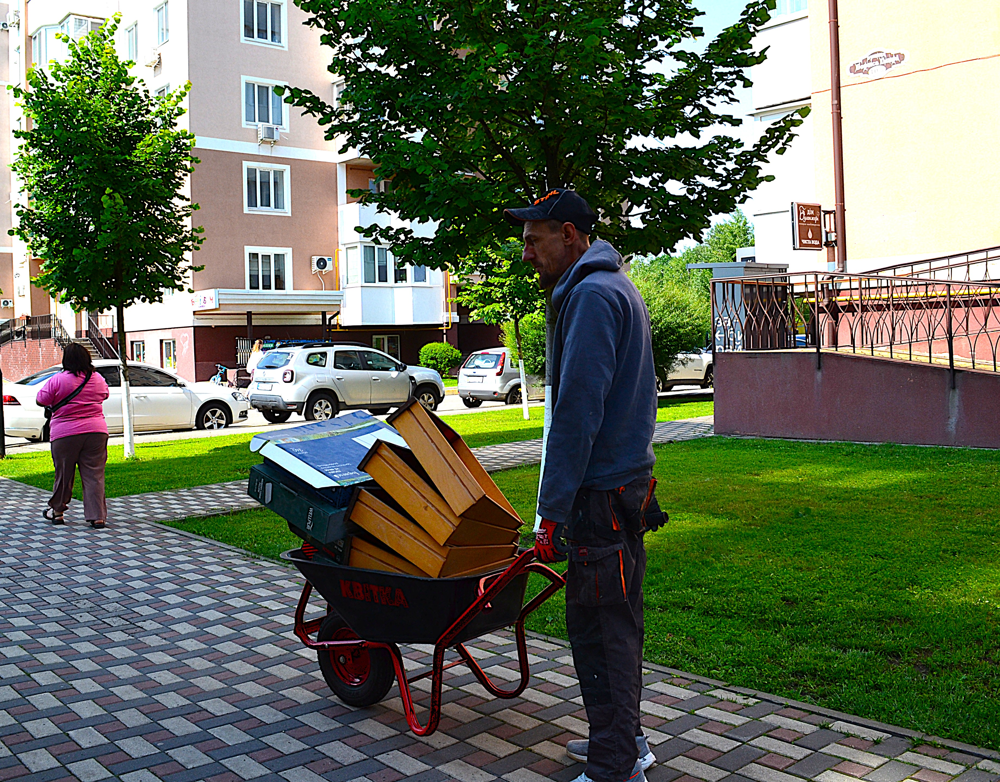
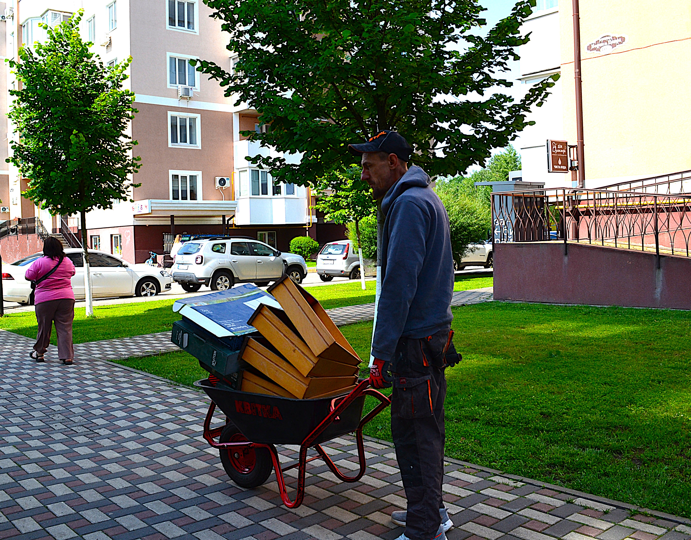
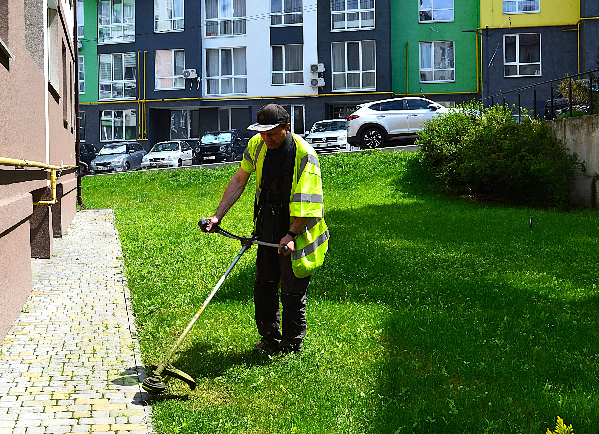
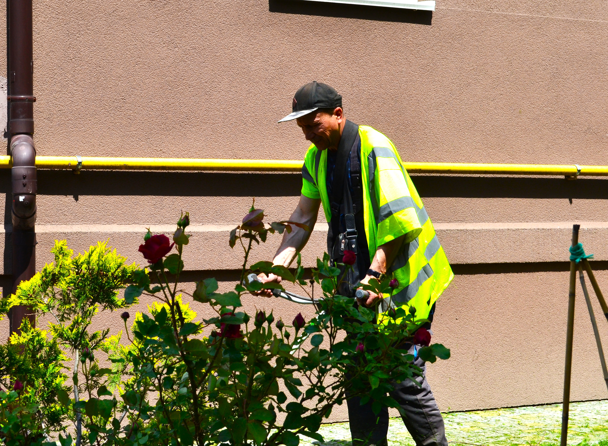
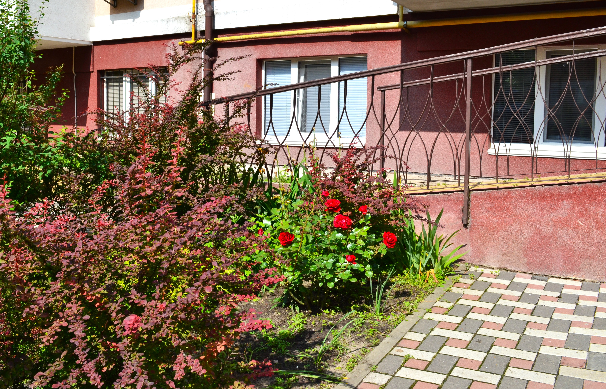
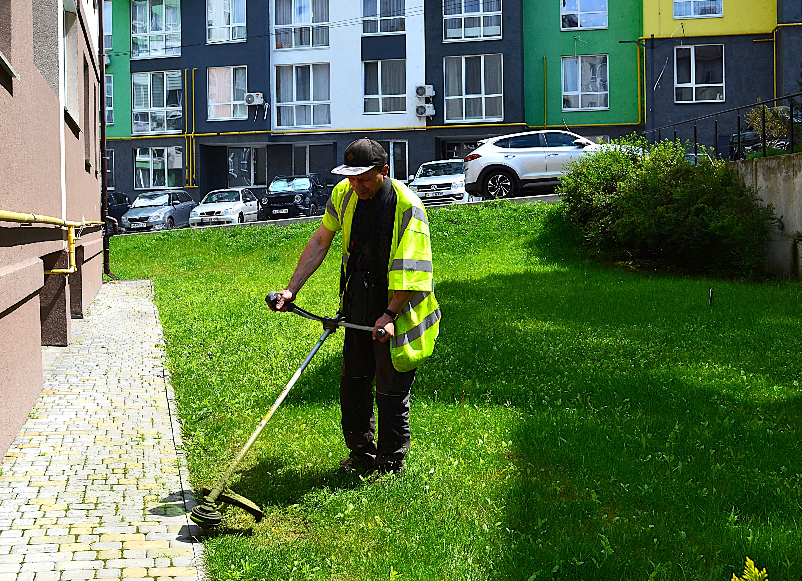
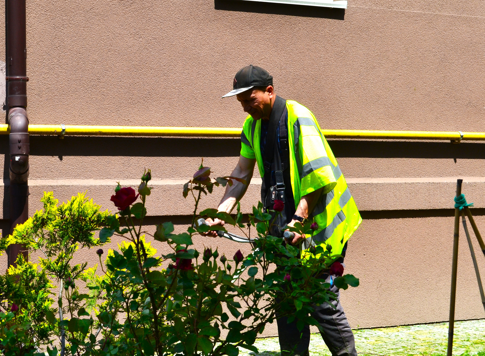
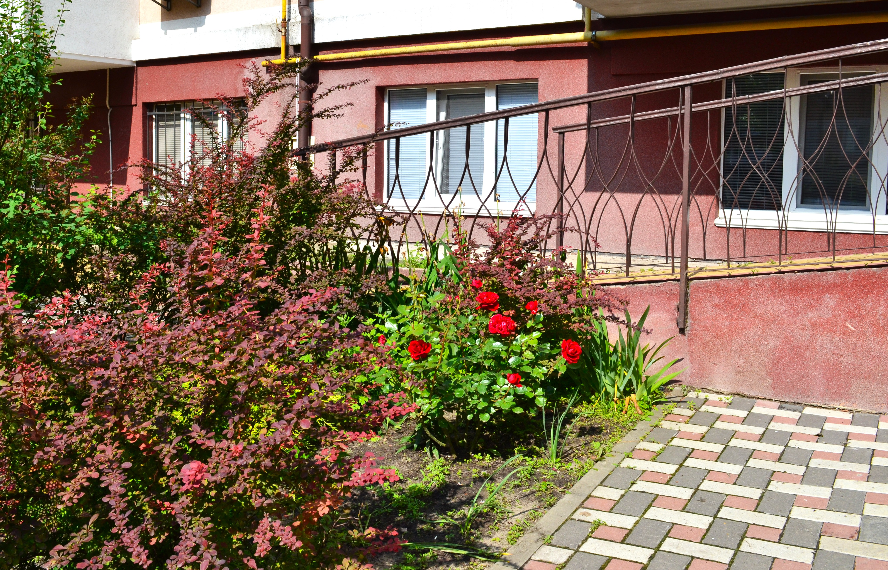

Озеленення та догляд за прибудинковою територією
В "Укр Житло Сервіс" ми пропонуємо послуги з озеленення та догляду за прибудинковою територією, створюючи затишні та естетично привабливі місця для вас та вашої родини. Наша команда фахівців розуміє важливість гармонійного простору біля вашого будинку та готова забезпечити вам високоякісні послуги.
1. Ландшафтний дизайн: Ми створюємо унікальний дизайн для вашої прибудинкової території, враховуючи ваші бажання та потреби.
2. Посадка рослин та дерев: Наші експерти допоможуть підібрати та посадити рослини та дерева, створюючи затишне та естетичне середовище.
3. Догляд за газоном та рослинами: Ми забезпечимо регулярний догляд за газоном, кущами, квітами та деревами, щоб ваша територія завжди виглядала охайно та доглянуто.
"Укр Житло Сервіс" — Професійний догляд за прибудинковою територією вашого житла!
 

 




